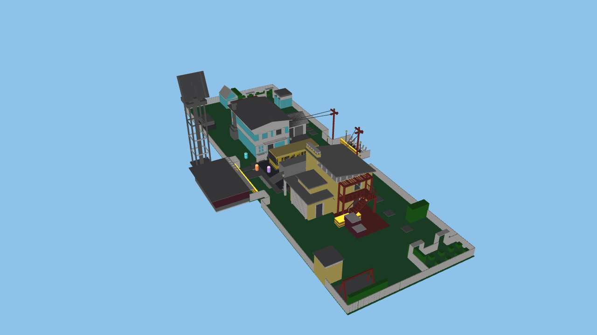
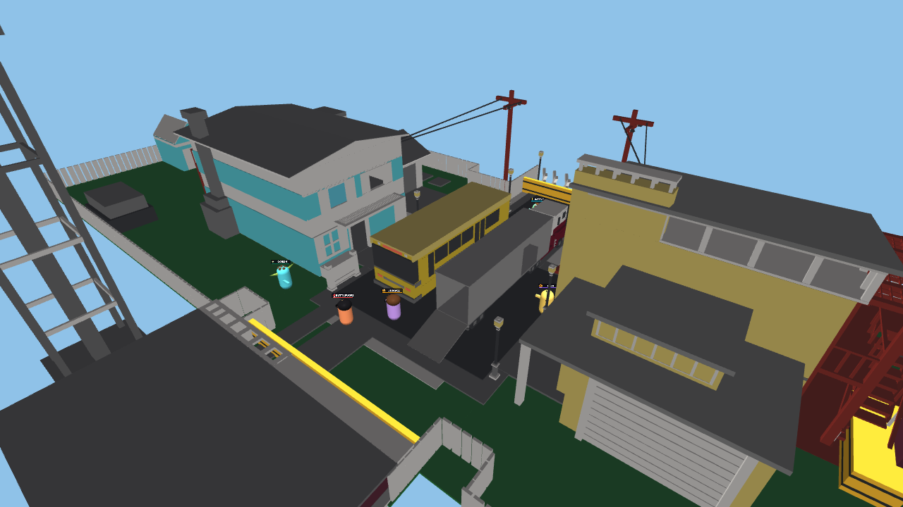
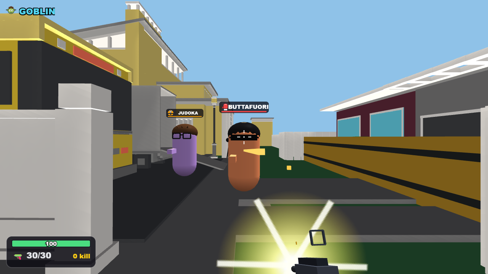
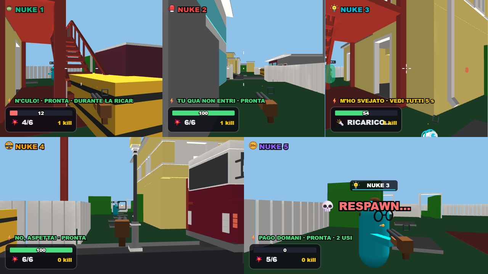

PARTY GAME / SPARATORIA / 2–5 GIOCATORINUKETOWN
Due case, cortili, passaggi laterali e veicoli al centro. Sfrutta le coperture, cambia strada e torna a combattere da uno dei sedici punti di respawn.

La nuova arena, selezionabile nel voto prima della partita.

La strada centrale: autobus, camion e ingressi delle case.

Visuale di combattimento — posa dimostrativa nel renderer di gioco.

Cinque visuali durante il controllo di gioco. Circa 56 FPS su RTX 3050, qualità alta, 1280×720, scala 1×.